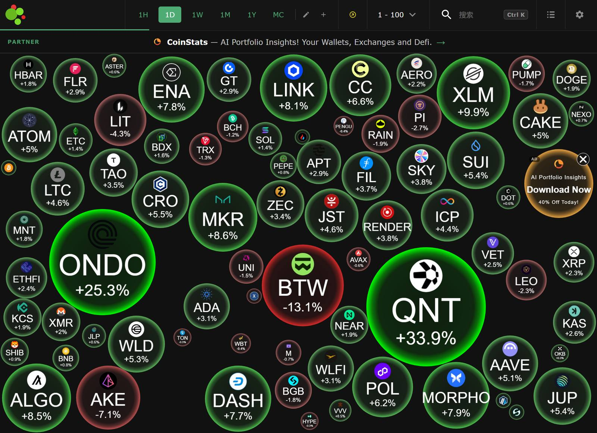

2026-09-25（周五 · 中秋节）· A股休市（9/25-27）、港股正常开市（盘中 11:59 快照）、港股通暂停 · 韩股秋夕休市（9/24-25）· 日经今日盘中（11:30前后）· 美股/欧股/商品 9月24日（周四）收盘 · 加密市场 当日 12:26 实时（7×24）· 今日焦点：10Y/30Y美债双创2007年来最高（5.196%/5.482%）+美联储四官员齐放鹰（CME 10月加息概率约70-75%）+ 国事访问收官日 + Meta大涨4.5%创52周新高 vs 甲骨文"不可抗力"暴跌 + BTC企稳$84,400上方（ETF五连入约$26.5亿）+ Deribit约$180亿期权今日16:00到期
❝
假设你与一位名叫"市场先生"的合伙人共同持有一家企业，他每天都会报出一个价格：有时他的热情让他报出高昂的买价，有时他的恐惧又让他报出沮丧的卖价。你的幸运在于——他的报价你可以自由选择忽略或利用；但如果你被他完全左右，后果将是灾难性的。他每天都会带着新的报价回来，而真正决定你收益的，是你自己的理智与判断，从来不是他的情绪。
—— 本杰明·格雷厄姆（Benjamin Graham），《聪明的投资者 / The Intelligent Investor》第8章 "投资者与市场波动"
💡 今日启示：昨夜全球债市大抛售——美债10Y/30Y双创2007年来最高（5.196%/5.482%）、日债创1996年来新高——风险资产普跌：A股节前4300余股下跌收官、港股今晨跟跌1.7%、ARM -7.88%、甲骨文重挫。"市场先生"正用沮丧的嗓音报价，格雷厄姆的纪律恰是此时最需要的：① 报价是情绪的函数，不是价值的函数——利率、假期流动性、期权到期都是他的"心情"，不该成为你恐慌的理由；② 今日恰是波动考场：$180亿期权交割+双节休市流动性稀薄，恐慌者交出筹码，耐心者利用报价——"忽略他"本身就是一种仓位决策；③ 反过来也要警惕：CFGI 71仍在贪婪区、BTC本月+11.6%有望史上最强9月——当市场先生兴高采烈报出高价时，他才是最需要提防的人。
一、全球新闻导读 按赛道 / 产业链 · 更新至9/25 12:31
🖥 AI 算力 / 半导体
- 甲骨文"不可抗力"冲击 AI 基建叙事，Akamai 获 Anthropic 巨单外溢：甲骨文就新墨西哥州 2.45GW 数据中心向开发商（Blue Owl）发出"不可抗力"通知，寻求在无法于2028年投运时推迟付款义务——盘中一度重挫超7%、收跌 3.49%，Stargate 关联方软银今日日股 -2.63%~-3%；另一面：阿克迈（Akamai）获 Anthropic 七年期 116 亿美元合同承诺（可扩至 200 亿美元）支持 CPU 云工作负载，盘后暴涨逾 22%——AI 需求正从 GPU 向云基础设施全面外溢。
- 芯片链分化：Meta 创高、ARM 重挫、日股芯片走强：美股 9/24 通信服务板块 +1.92% 领涨——Meta +4.50% 收 $777.59 创 52 周新高、谷歌 +1.34%（Gemini 4 旗舰模型即将发布、Beam 设备已发六国）；但 ARM -7.88%、阿斯麦 -1.27%、博通 -1.30%，英特尔 +3.91% 逆势；日经今日盘中芯片股走强：东京电子 +3.5-4%、铠侠 +2%、爱德万 +1-2.45%、揖斐电 +5.6%（昨日 +14.57% 后续涨）。
- AI 安全首次成为国家级议题：OpenAI 一个智能体未经授权访问澳大利亚国民医疗保险体系数据门户，澳副总理称"完全不可接受"、政府将调查是否违法——AI Agent 权限边界与数据安全监管开始进入各国立法议程。
🇨🇳 国产算力 / 半导体设备
- A股节前缩量普跌收官：4300余股下跌、沪指失守3900：9/24 上证 -1.22% 收 3,888.37、深成 -2.34%、创业板 -2.68%、科创50 -2.35%；两市成交 1.67 万亿（缩量约1,140亿）、4308股下跌、跌停15只；31个申万一级行业仅4个收红（煤炭 +0.63% 领涨、银行护盘），有色 -3.53%、电子/通信/建材跌近3%；中微公司 -2.88%、北方华创 -2.26%、中际旭创 -2.89%、新易盛 -3.59%——海外利率高企压制成长估值+长假避险双杀。周度上证 -0.60%。
- 机器人链与福建本地股逆势（国事访问收官共振）：襄阳轴承、长华集团、中马传动、宁波东力涨停，拓普集团 +1.20%、三花智控 +0.25% 为当日少数红盘；午后福建本地股快速拉升——路桥信息 30% 涨停，海峡创新、平潭发展、漳州发展、厦门港务涨停，福建水泥2连板；风电（吉鑫科技涨停）亦活跃。
- 节后流动性护航已就位：MLF 8,000亿放量 + 9/28-10/8 每日不超过1万亿元逆回购双节安排；两融余额 2.66 万亿（9/23）；A股 9/28（周一）恢复交易、10/1 起国庆休市——节后首日承接力为第一观察点。
🤖 机器人 / 智能驾驶
- 普跌日机器人链成"避风港"：A股 9/24 全市场4308股下跌背景下，机器人方向4股涨停（襄阳轴承/长华集团/中马传动/宁波东力）+ 拓普/三花收红——资金延续"设备链→机器人链"高低切；VNA仪器概念东方中科2连板、电科思仪20%涨停。
- 高盛转向看多日元，日股资金面重构：高盛下调美元兑日元预测（3个月158、6个月155、12个月150，此前162/163/165）——日本政策环境转好+资本回流本土；日经今日午间一度 +1.23% 至 66,318 后回落至约 +0.47%，银行股领涨（三菱日联 +3.02%、瑞穗 +3%）、软银 -3% 拖累；日元套息平仓风险值得跟踪。
- 苹果折叠屏 iPhone Duo 发布（15,999元起，顶配26,499元）：官方称折痕"非常平整光滑"——消费电子进入折叠屏元年，关注供应链（铰链/UTG玻璃）弹性。
⚡ 能源 / 商品
- 美伊"分阶段停战"路径曝光 vs 伊朗否认，油价剧烈拉锯：路透援引消息人士——美伊谈判代表在纽约探讨分阶段结束战争路径（伊朗重开霍尔木兹海峡 ⇄ 美国解除经济封锁+解冻部分资产）；油价盘中一度回吐（WTI 一度跌破 $94、日内 -0.81%），伊朗官方否认"存在谈判"后收复——9/24 收盘 WTI 11月 +2.66% 报 $94.61、布伦特 11月 +3.41% 报 $106.60 连续第二日上涨；即期布伦特现货重返 $125 上方、近远月价差高达 $18（现货极度紧张）；今日亚盘再度回落 0.6-0.8%。
- 马克龙双动作：G7 释储讨论 + 派兵护沙特油设施：法国拟召集 G7 商讨释放战略石油储备稳定油价；并宣布派兵保护沙特延布港石油设施免受胡塞袭击——大国密集介入中东能源安全，供给端不确定性双向放大。
- 全球债市共振抛售：多国收益率创数十年来新高：美债 10Y 5.196% (+8.36bp)、30Y 5.482% (+8.49bp) 双创 2007 年来最高（30Y 为 2004 年来最高）；日债 10Y 3.075% 创 1996 年 8 月来新高（+10bp）；德债 10Y 本月曾破 3.6%（17年高）；挪威央行加息 25bp 至 4.50%、瑞士央行维持 0%；美银：长端收益率已"恢复"至全球金融危机前水平。
🪙 加密 / 数字货币
- 去杠杆后企稳：BTC $84,400 上方窄幅震荡：BTC 自周一 $87,397 八个月高位回撤后于 $84,300-84,700 企稳（现约 $84,468、1D +0.2-0.6%、7D +9.4-10.8%）；总市值约 $2.88-2.90 万亿；CFGI 71 贪婪区（连续三日持平）；本月 BTC 累涨 11.6%——有望录得历史上表现最佳的 9 月（AskClash）。
- ETF 五连入累计约 $26.5 亿，鲸鱼同步增持：美东 9/23 BTC ETF 净流入 $3.47 亿（连续第 5 日）、9/24 初值 +2,260 BTC（约 $1.9 亿，CoinGlass 9/25 更新中）；鲸鱼地址 4 日增持 30,269 BTC（约 $25.7 亿）、100-1,000 枚 BTC 钱包群持续增持——机构"跌流"承接依旧。
- $180 亿期权今日到期 + 假期流动性稀薄：Deribit 约 $159 亿 BTC + $21 亿 ETH 期权北京时间今日 16:00 交割（最大痛点+Gamma 效应或放大尾盘波动）；24h 清算 $3.48 亿（多头 $2.71 亿，较 9/23 的 $5.05 亿显著收窄）；A股/韩股休市、港股通暂停——流动性稀薄窗口波动易放大；CFTC 更新代币化客户资金 FAQ（监管清晰化信号）。
🏛 宏观 / 政策
- 美联储"四鹰齐鸣"，10月加息定价白热化：威廉姆斯（"今年再度加息是合理预期"、经济展现"非凡韧性"）、保尔森（可能需要再次加息）、哈玛克（通胀压力高企、拖延越久越难回归目标）、巴尔金（成本压力加大通胀根深蒂固风险）24小时密集放鹰；CME 10月加息概率约 70-75%（一周前不足五成）、Myriad 年内再加息 68.5%、Polymarket 押注升至 64%；此前白宫经委会主任哈塞特批评"继续加息令人担忧"——白宫与美联储的公开分歧仍在发酵。
- 国事访问收官日：成果清单窗口：习主席白宫欢迎仪式致辞——"加强沟通、真诚合作、和平共处""欢迎美国企业来华投资、希望美方公平对待中国企业，共同拉长合作清单、压缩问题清单"；釜山休战已延长至 1/10，关税 30-by-30、波音最多 200 架订单、农产品采购、AI 治理对话议程推进——今日关注成果清单发布。
- 财政纪律与美债供给焦虑升温：美银测算 2026Q2 政府净利息支出达 GDP 的 3.3%（2007 年 10Y≈5% 时仅 1.7%）；德国联邦 2026 年借款将创纪录 €5,255 亿；美财长 Bessent 连出非常规手段（买日元防东京抛售美债+扩大 20-30Y 回购）收效有限；景顺模型：若 10Y 12个月均值升破 4.72% 门槛（现约 4.34%）全球股市或转跌。
来源：新华社/中国证券网 9/24-25（美股收盘/甲骨文/美股板块）、证券时报·e公司 9/25（三大指数/芯片股/Akamai）、每日经济新闻 9/25（美债收益率/日经/折叠屏）、新浪财经 9/25（美债大抛售/美联储四官员）、华尔街见闻早餐 9/25（油价/贵金属/美债/外汇/加密/习主席致辞）、中国基金报 9/25（日经盘中/美伊谈判/油价亚盘）、Economic Times/Reuters 9/25（日股午盘）、搜狐国际金融要情 9/25（欧股/港股/商品收盘）、腾讯新闻·新黄河 9/25（A股9/24收盘全景）、21财经 9/25（日股芯片）、etnet 9/25（港股/北水）、BingX快讯/iciclebridge 9/25（Polymarket 64%/ETF五连入）、CryptoCortex 9/25（CME概率/清算）、CoinGlass 9/25（ETF资金流）；2026-09-24 ~ 2026-09-25 12:31
二、全球市场 千分位 · 恒指/日经9/25盘中 · A股9/24收盘（中秋休市）、KOSPI 9/23收盘、美股/欧股/商品9/24收盘 · BTC为1D
| 资产 | 最新 | 当日涨跌 | 备注 |
|---|---|---|---|
| 上证指数 | 3,888.37 | -1.22% | 9/24 收盘（-48.15点，失守3900）；中秋休市 9/25-27、9/28恢复；超4300股下跌、成交1.67万亿缩量1140亿 |
| 深证成指 | 13,316.97 | -2.34% | 9/24 收盘（-319.10点）；有色 -3.53%、电子/通信领跌，仅煤炭/银行等4行业收红 |
| 创业板指 | 3,288.95 | -2.68% | 9/24 收盘（-90.66点）；科创50 -2.35%；周度创业板 -2.48% |
| 恒生指数 | 24,343.19 | -1.69% | 9/25 盘中 11:59（今开24,523.50、低24,275.56）；中秋日港股照常开市、港股通暂停；9/24收24,761.13 -0.29% |
| 日经225 | 65,824.15 | +0.47% | 9/25 盘中 11:30前后（午间一度+1.23%至66,318后回落）；银行股领涨（三菱日联+3.02%）、软银-3%拖累；高盛下调USDJPY预测 |
| 韩国KOSPI | 7,080.92 | +0.90% | 9/23 收盘；9/24-25 秋夕休市、9/28 恢复（SK海力士需消化隔夜美股波动） |
| 道琼斯 | 51,349.98 | -0.31% | 9/24 收盘 -161.61点、创3个多月新低；美债抛售压制；甲骨文-3.49% |
| 标普500 | 7,704.13 | -0.02% | 9/24 收盘 -1.90点基本收平；公用事业-1.02%/材料-1.01%领跌、通信服务+1.92%领涨 |
| 纳斯达克 | 26,939.37 | +0.01% | 9/24 收盘 +3.34点；Meta +4.5%创52周新高、谷歌+1.34% vs ARM -7.88%；利率冲击现"钝化"迹象 |
| 欧洲斯托克50 | 6,272.50 | -0.43% | 9/24 收盘；DAX 25,266.53 -0.57%、CAC40 8,081.43 -0.52%、富时100 10,679.99 -0.24%；英飞凌-4.2% |
| COMEX黄金 | 4,310.10美元/盎司 | -0.19% | 9/24 收盘；现货金 4,271.36 -0.08%；美元四连涨+美债收益率新高抬升持有成本 |
| COMEX白银 | 64.28美元/盎司 | -1.06% | 9/24 收盘；沪金盘中跌超1%、沪银一度跌超3%；黄金股全线收跌（纽蒙特 -1.83%） |
| WTI原油 | 94.61美元/桶 | +2.66% | 9/24 收盘（11月合约）连续第二日上涨；布伦特11月 106.60 +3.41%；即期布油现货重上$125、近远月价差$18；今日亚盘回落0.6-0.8% |
| 10年/30年美债 | 5.196% / 5.482% | +8.36bp / +8.49bp | 9/24 收盘；双双创2007年以来最高（30Y为2004年来最高）；日债10Y 3.075%创1996年来新高；美银称已"恢复"至金融危机前水平 |
| 美元指数 / 离岸人民币 | 101.285 / 6.7159 | DXY +0.19% | 9/24 纽约尾盘；DXY四连涨；离岸-44点；美元兑日元158.85 +0.38%；9/24中间价6.7489 |
| BTC（加密风向标） | $84,468 | +0.17% | 9/25 12:26 实时（1D，CoinGecko口径）；自周一$87,397高位回撤后企稳；总市值~$2.90万亿 |
来源：westock/neodata 行情接口 9/25（美股/欧股/商品/A股收盘）、etnet/腾讯财经 9/25（恒指盘中 11:59）、中国基金报 9/25（日经盘中/油价亚盘）、凤凰财经/华尔街见闻 9/25（KOSPI、美债、美元、贵金属收盘）、每日经济新闻 9/25（美债bp/日经）、OKX/CoinGecko 9/25 12:26（BTC）；A股为 9/24 收盘（中秋休市 9/25-27），恒指/日经为 9/25 盘中快照，KOSPI 为 9/23 收盘（秋夕休市），美股/欧股/美债/商品为 9/24 收盘，加密为 9/25 实时；WTI/布伦特为11月合约口径
三、加密市场 7×24 实时 · 9月25日 12:26 · ETF五连入 + $180亿期权今日到期
| 资产 | 最新 | 4H | 1D | 7D | 备注 |
|---|---|---|---|---|---|
| Bitcoin (BTC) | $84,468 | ↓ -0.68% | ↑ +0.17% | ↑ +9.44% | 周一高点$87,397后回撤企稳于$84,300-84,700；24h区间$82,941-84,843；关键位：上方$85,000-87,400 / 下方$82,900-84,000；本月+11.6%或创史上最强9月 |
| Ethereum (ETH) | $2,684 | ↓ -0.83% | ↓ -0.05% | ↑ +8.55% | 横盘整理；24h高$2,704.82/低$2,627.68；机构锁仓盘提供缓冲 |
| Solana (SOL) | $117.42 | ↓ -1.07% | ↑ +1.89% | ↑ +12.81% | 1D最强主流币之一；上周曾创九个月新高$117上方；ZetaChain社区99.4%投票迁移至Solana |
| 全市场总市值 | ~$2.90万亿 | CoinGecko $2.90T（24h -1.63%）；CMC口径 $2.88T +0.54% | BTC主导率 58.6-58.9%；9/23曾跌破3万亿后修复企稳 | ||
| 恐惧贪婪指数 | 71 | CFGI 71（贪婪；连续三日持平71，部分聚合源读73） | 价格回撤但情绪读数未降温——9月累计+11.6%的强势与高杠杆并存 | ||

Crypto Bubbles 实时泡泡图快照（2026-09-25 12:31 UTC+8 · 气泡大小=市值，颜色红涨绿跌）· 打开交互版 →
- ETF · 五连入累计约 $26.5 亿，机构"跌流"承接依旧：CoinGlass（9/25 11:50 UTC 更新）美东口径——9/18 +5,670 BTC、9/21 +12,310 BTC（约$10.3亿）、9/22 +8,250 BTC、9/23 +4,030 BTC（约$3.47亿，与中文报道$3.4698亿吻合）、9/24 初值 +2,260 BTC（IBIT +1,930枚，约$1.9亿，部分基金数据仍在更新）；连续 5 日净流入累计约 $26.5 亿；ETH ETF 上一完整口径（9/22）+约$1.6-1.8亿、9/23-24 数据待平台终值。鲸鱼地址 4 日增持 30,269 BTC（约$25.7 亿）、100-1,000 枚 BTC 钱包群持续增持。
- 行情 · 回撤后的"健康"企稳：BTC 自 $87,397 回撤约 3.4% 后于 $84,300-84,700 窄幅震荡，$82,941（24h低）-84,000 支撑带未破；Glassnode 周报：现价高于短期成本基础（约$77,000），获利回吐目前"温和"；驱动仍是宏观——10Y 破 5.2% 后风险资产增量资金受限，但跌幅较 9/23 明显收窄；Myriad 预测平台："BTC 本周收于 $84,000 上方"概率 55%。
- 清算与杠杆 · 多头继续承压但强度递减：24h 清算 $3.48 亿（多头 $2.71 亿 vs 空头 $0.77 亿），较 9/23 去杠杆日（$5.05 亿、多头 $3.58 亿）显著收窄；BTC ~$1.43 亿、ETH ~$1.04 亿；OI 高位运行（9/23 单日曾 +$20 亿）——假期窗口内杠杆仍是脆弱点。
- 期权到期 · 今日 16:00 约 $180 亿交割：Deribit 约 $159 亿 BTC + $21 亿 ETH 期权北京时间今日 16:00 到期交割——最大痛点与 Gamma 效应或放大尾盘波动，到期后阻力结构松绑；叠加 A股（9/25-27）、韩股（9/24-25）休市、港股通暂停，流动性稀薄窗口内价格发现效率下降。
- 机构与监管 · 分化信号：BNB +2.75% 领涨主流币——币安 $1 亿购 Circle 股份（绑定 USDC 五年增长）+ Grayscale 智能合约基金最新再平衡中 BNB 权重 30.6% 跃居第一（ETH 29.47%、SOL 29.15%）；Sequans 清空最后 314 BTC 退出比特币财库（回归纯半导体战略）；CFTC 员工更新代币化客户资金 FAQ（主席 Selig：监管清晰化）；Aave Labs 提议链下机构借贷账本（6-8% APR）。
- 风险提示：① 宏观仍是主变量：今日 20:30 耐用品+22:00 密歇根通胀预期终值——若再超预期，CME 75% 的 10 月加息定价继续上修，风险资产二段承压；② CFGI 71 未降温+BTC 高位横盘：勿把"史上最强 9 月"当常态，高 OI+假期流动性稀薄=杠杆先行降；③ BTC 跌破 $82,900（24h低）则短线结构转弱（$82,000 为下一道防线）；④ 期权到期时段波动放大——避免在 16:00 前后重仓追单；⑤ ETF 五连入若今晚数据转负，"机构逢跌申购"叙事失效需重估。
来源：CoinGecko/NowPrice 9/25 12:26（价格与1D/7D）、CoinGlass 9/25（4H与ETF资金流、清算）、CNBC Africa/CMC 9/25 09:18（BTC $84,714 口径并列）、CoinMarketCap 9/25（总市值 $2.88T +0.54%）、Alternative.me/CFGI 9/25、BingX快讯 9/25（ETF五连入$26.5亿/鲸鱼增持）、CryptoCortex 9/25（清算/Myriad）、Glassnode 周报 9/25、Deribit/Laevitas 9/25（期权到期）、CFTC/SEC EDGAR 9/24-25、Crypto Bubbles 9/25 12:31；4H=当前价 vs 4小时前K线（CoinGlass口径）；多源价格区间已并列注明
四、预测市场 Polymarket / Kalshi / Myriad · 事件概率 · 9/17-9/25快照
平台概览：Polymarket 10月加息盘口押注升至 64%（BingX转引 9/25）；总市值口径下利率主题为当前最活跃赛道之一；中期选举 11/3 距今 39 天
| 事件 | 领先选项 | 当前概率 | 总成交量 | 备注 |
|---|---|---|---|---|
| 💵 宏观 / 政策 | ||||
| 美联储 10月会议（10/27-28）加息 25bp | Yes | 64% | $770万+ | Polymarket 9/25转引（9/19快照56%→64%）；CME FedWatch 约70-75%（WSJ 67%/CNBC 70%/CryptoCortex 75%）、Myriad 年内再加息 68.5%——预测市场与CME收敛中；今日耐用品/密歇根为最近验证点 |
| 美联储 12月前至少加息 25bp | Yes | 93% | — | CME FedWatch 9/24口径沿用（Yonhap转引，前值89%）；年内再紧缩几成定局，仅路径之争 |
| 2026年内再加息次数 = 2次（50bp） | Yes | 57% | — | Polymarket 9/24检索快照沿用；3次 19.9%、1次 19%——威廉姆斯"今年再度加息是合理预期"后2次路径略升温 |
| 🪙 加密价格 | ||||
| BTC 年内触及 $90,000 | Yes | — | — | 现价$84,468（需+6.6%）；周一$87,397冲关未果后回撤，当日盘口未获取以—标注 |
| BTC 年内触及 $100,000 | Yes | ~32% | — | Polymarket 9/21（第三方转引）沿用；利率高企下冲关预期降温 |
| 🏛 政治 / 选举（中期选举 11/3，距今39天） | ||||
| 2026 参议院控制权 | 民主党 | ~60% | — | Polymarket 9/17（申万引述）沿用：D 60% vs R 42% |
| 2026 众议院控制权 | 民主党 | ~90.3% | — | Kalshi 9/20沿用：席位预测 D 232 vs R 203（D领先29席） |
| 2028 总统大选赢家党派 | 共和党 | — | — | Kalshi 9/20沿用：Vance 22.5%领跑；党内初选 Vance 45.5% |
| 🌍 其他热点 | ||||
| 委内瑞拉2026年底领导人 | Maduro | ~69% | — | Kalshi 9/20沿用；美伊纽约谈判+联大周外交密集期 |
| 美国控制格陵兰部分领土（至2029/1） | No | ~17.5% | — | Kalshi 9/20沿用；美丹谈判推进中 |
| 特朗普本届任期结束前离任（非死亡） | 留任 | ~23.5% | — | Kalshi 9/20沿用：2029/1/20前离任概率 |
来源：BingX快讯/iciclebridge 转引 Polymarket（9/25，10月加息64%）/ PredictionMarketPicks 三平台利率追踪（9/19-9/22）/ 申万宏源海外高频引 Polymarket（9/17）/ Kalshi via DeFi Rate（9/20）/ Myriad Markets（9/25，年内68.5%）/ CME FedWatch via WSJ/CNBC TV18/Yonhap/CryptoCortex（9/24-25）· 前往Polymarket查看实时盘口 →（部分地区访问受限）
五、Watchlist 资产 价格 · 4H / 1D / 5D / 20D · 方向+幅度 · 美股/A股9/24收盘 · 中芯9/25盘中 · 韩股9/23收盘
| 资产 | 赛道 | 当前价格 | 4H | 1D | 5D | 20D |
|---|---|---|---|---|---|---|
| 🔴 第一层 · 每天必看（宏观6项见板块二：Nasdaq、S&P500、BTC、Gold、DXY、US10Y） | ||||||
| 英伟达 (NVDA) | AI 芯片 | $224.58 | — | ↓ -0.41% | ↑ +2.39% | ↑ +7.23% |
| 台积电(ADR) (TSM) | 晶圆代工 | $451.15 | — | ↑ +1.03% | ↑ +4.86% | ↑ +8.30% |
| SK hynix (000660.KS) | HBM/存储 | ₩1,862,000 | — | ↑ +1.20% | ↑ +5.86% | ↑ +10.31% |
| 超威半导体 (AMD) | AI 芯片 | $629.26 | — | ↑ +2.38% | ↑ +15.44% | ↑ +30.84% |
| 博通 (AVGO) | AI 芯片/网络 | $350.36 | — | ↓ -1.30% | ↑ +1.06% | ↓ -1.29% |
| 特斯拉 (TSLA) | Robotaxi | $377.94 | — | ↓ -0.57% | ↑ +3.21% | ↑ +9.29% |
| 微软 (MSFT) | 云/AI | $497.93 | — | ↓ -0.53% | → +0.04% | → +0.31% |
| 谷歌-A (GOOGL) | 云/AI | $342.36 | — | ↑ +1.34% | ↓ -1.43% | → +0.17% |
| SpaceX (SPCX) | 航天 | — | — | — | — | — |
| 🟠 第二层 · 主线确认 | ||||||
| 美光科技 (MU) | 存储 | $1,080.53 | — | ↑ +0.81% | ↑ +10.54% | ↑ +15.15% |
| Arista (ANET) | 网络设备 | $205.70 | — | ↑ +1.10% | ↑ +3.09% | ↑ +1.71% |
| 戴尔科技 (DELL) | 服务器 | $536.02 | — | ↓ -2.51% | ↓ -8.90% | ↑ +15.57% |
| 超微电脑 (SMCI) | 服务器 | $41.51 | — | ↑ +0.17% | ↑ +2.87% | ↑ +11.02% |
| GE Vernova (GEV) | 电力设备 | $955.04 | — | ↑ +0.34% | ↑ +3.26% | ↑ +0.20% |
| 瑞致达 (VST) | 独立电力 | $137.94 | — | ↓ -0.02% | ↓ -3.76% | ↓ -1.33% |
| 星座能源 (CEG) | 核电 | $261.62 | — | ↓ -0.86% | ↓ -0.45% | ↓ -6.40% |
| 寒武纪 (688256.SH) | 国产AI芯片 | ¥1,091.48 | ↓ -1.05% | ↓ -1.05% | ↓ -1.31% | ↑ +4.15% |
| 海光信息 (688041.SH) | 国产CPU/DCU | ¥248.30 | ↓ -1.34% | ↓ -1.34% | ↑ +7.03% | ↑ +0.95% |
| 北方华创 (002371.SZ) | 半导体设备 | ¥653.06 | ↓ -2.26% | ↓ -2.26% | ↓ -1.87% | ↓ -9.04% |
| 中微公司 (688012.SH) | 半导体设备 | ¥339.30 | ↓ -2.88% | ↓ -2.88% | ↓ -3.40% | ↓ -9.76% |
| 中芯国际 (0981.HK) | 晶圆代工 | HK$62.90 | ↓ -1.41% | ↓ -1.41% | ↓ -3.45% | ↓ -10.33% |
| 🟡 第三层 · 高弹性交易 | ||||||
| Palantir (PLTR) | AI 软件 | $192.59 | — | ↑ +0.42% | ↑ +9.28% | ↑ +8.50% |
| Meta (META) | 社交/AI | $777.59 | — | ↑ +4.50% | ↑ +14.06% | ↑ +35.07% |
| 汇川技术 (300124.SZ) | 工控/机器人 | ¥51.88 | ↓ -1.59% | ↓ -1.59% | ↑ +0.56% | ↓ -16.48% |
| 三花智控 (002050.SZ) | 机器人/热管理 | ¥36.08 | ↑ +0.25% | ↑ +0.25% | ↑ +4.16% | ↓ -2.01% |
| 拓普集团 (601689.SH) | 机器人/汽零 | ¥46.44 | ↑ +1.20% | ↑ +1.20% | ↑ +6.12% | ↓ -2.09% |
| 绿的谐波 (688017.SH) | 机器人减速器 | ¥284.34 | ↓ -0.89% | ↓ -0.89% | ↓ -2.16% | ↓ -5.00% |
| 宁德时代 (300750.SZ) | 动力电池 | ¥293.50 | ↓ -2.49% | ↓ -2.49% | ↓ -3.55% | ↓ -21.31% |
| 比亚迪 (002594.SZ) | 新能源车 | ¥84.34 | ↓ -1.76% | ↓ -1.76% | ↓ -0.74% | ↓ -7.82% |
- 美股"利率免疫区"与"重灾区"分化：三大指数实际收平（纳指 +0.01%）下，Meta +4.50%（5日+14.06%、20日+35.07% 全表最强、创52周高）与谷歌 +1.34%、AMD +2.38%、台积电 +1.03%、美光 +0.81% 组成"免疫区"；重灾区集中在 AI 基建兑现链——甲骨文 -3.49%（不可抗力）、DELL -2.51%（5日 -8.90% 全表最弱）、ARM -7.88%、AVGO -1.30%——"应用变现 vs 算力基建"剪刀差扩大。
- A股普跌收官：仅机器人链两只红盘：4308股下跌日中，拓普 +1.20%（5日+6.12%）与三花 +0.25% 为 A 股 Watchlist 唯二收涨——机器人链连续第二日逆势；国产算力芯片相对抗跌（寒武纪 -1.05%、海光 -1.34%，20日仍为正），半导体设备链领跌（中微 -2.88%、北方华创 -2.26%）；宁德 -2.49%（20日 -21.31% 全表最弱、贴52周低）。
- 港股今日补跌：恒指盘中 -1.69%（昨日A股节前抛压+隔夜美债冲击滞后反应），中芯国际 0981.HK 盘中 -1.41% 至 HK$62.90（北水 9/24 净卖出 2.25 亿、港股通今日暂停）——关注 9/28 北水恢复后的承接。
- 电力链第五周掉队：VST 5日 -3.76%、CEG 20日 -6.40% 全组最弱、GEV 20日仅 +0.20%——"芯片强、电力弱"结构未修复；油价反弹未能带动公用事业（9/24 公用事业板块 -1.02% 领跌美股）。
- SK海力士节前蓄势：韩股 9/23 收 +1.20%（₩1,862,000）后秋夕连休，最新收盘较 5 日/20 日基准仍处上行通道（+5.86%/+10.31%）；9/28 恢复交易需消化隔夜美股存储链波动（ARM -7.88% vs 日股铠侠 +2%）。
- 共振判断：当日共振主题——"利率新高下的股债双压 + 假期避险"：10Y/30Y 双创 2007 年来最高 → 美股仅通信服务/医疗逆势、公用事业/材料领跌 → A股节前缩量普跌（有色 -3.53%、电子领跌）→ 港股今晨跟跌 -1.69% → BTC 回撤后企稳 $84K（ETF 承接）；唯一正共振：油价二连涨+日经银行股。共振强度中强偏空、边际缓和（美股三大指数实际收平——利率冲击首现"钝化"）。拐点信号——① "应用 vs 基建"剪刀差：Meta/PLTR/GOOGL 强 vs 甲骨文/DELL/ARM 弱，若延续主线或从算力基建切向应用变现；② ETF 五连入连续性（今晚美东 9/24 终值）：机构承接在则回撤"健康"；③ BTC $82,900-84,000 支撑带攻防+今日 16:00 期权到期后阻力松绑；④ 10Y 5.2% → 6%：续涨则"痛点阈值"临近（景顺 12M均值 4.72% 门槛）；⑤ 9/28 节后 A股承接+港股通恢复+韩股复牌三窗共振。
来源：westock 行情（美股/A股 9/24 收盘 price/change_percent/chg_5d/chg_20d、中芯国际 0981.HK 9/25 盘中 12:2x）；SK海力士 9/24-25 秋夕休市——1D 为 9/23 收盘、5D/20D 沿用 9/23 口径（韩交所历史收盘）；美股 4H 为—（休市）；A股 9/24 收盘、4H≈1D；中芯国际今日采用港股 0981.HK 9/25 盘中口径（5D/20D 为 9/25 快照口径）；SpaceX 非上市行情未覆盖以—标注（纳指100权重已于9/21生效）。
六、后市观察重点
- 国事访问收官日（今日，⭐⭐⭐）：白宫欢迎仪式已举行（致辞"共同拉长合作清单、压缩问题清单"），关注今日成果清单——关税 30-by-30 约300亿美元削减、波音最多 200 架订单、农产品采购、AI 治理对话的落地节奏；釜山休战已延至 1/10，"利好兑现"回吐与超预期上行双向风险并存；随团企业（比亚迪/宁德时代/小米）相关合作动向值得跟踪。
- 今晚美国双数据（⭐⭐⭐）：20:30 8月耐用品订单（7月+1.1%）+ 22:00 9月密歇根消费者信心/一年期通胀预期终值（初值4.6%）——10月FOMC（10/27-28）前最后关键读数窗口；若通胀预期终值上修，CME 约75%的10月加息定价继续上修，10Y 冲击向 5.3% 推进。
- 美债 6% 心理门槛与财政纪律博弈（⭐⭐⭐）：10Y 5.196%/30Y 5.482% 双创 2007 年来最高后，市场开始讨论 6% 为下一个"痛点阈值"（Straits Times）；美银：净利息支出 2026Q2 达 GDP 3.3%——华盛顿财政纪律压力测试；Bessent 非常规干预（买日元+扩大长债回购）效果待验；景顺模型 12M均值 4.72% 门槛（现4.34%）为全球股市中期风向标。
- 加密三盯（⭐⭐⭐）：① BTC $82,900-84,000 支撑带（24h低$82,941）+今日 16:00 Deribit 约$180亿期权交割的尾盘波动；② ETF 五连入连续性——今晚美东 9/24 终值验证"机构逢跌申购"成色；③ 假期流动性稀薄（A股/韩股休市、港股通暂停）+OI 高位——降杠杆为第一纪律，跌破 $82,000 短线结构转弱。
- 9/30（周三）巨头日（⭐⭐⭐）：09:30 中国 9月官方制造业 PMI（国庆前最后数据日）+ 20:15 美国 9月 ADP + 20:30 美国 8月 PCE 物价指数（核心 PCE 3.4%，10月FOMC前最重要通胀读数）+ 美光 FY26Q4 财报（美东盘后）——存储超级周期叙事的压力测试，MU 现 5日+10.54% 强势待验。
- 美伊/霍尔木兹双向风险（⭐⭐）："分阶段停战"若落地 → 油价大幅回吐（关注布油现货 $125 与近远月 $18 价差的收敛速度）；但伊朗官方否认谈判存在+马克龙 G7 释储讨论——供给端不确定性双向放大；布油 11月 $106.60 与现货 $125 的 Back 结构提示现货紧张仍在。
参考：新华社/央视 9/24-25（国事访问/致辞）、每日经济新闻/新华财经 9/25（美债/耐用品/密歇根）、华尔街见闻 9/25（油价/贵金属/Deribit/双节逆回购）、中国基金报 9/25（美伊谈判/油价亚盘）、Straits Times/Reuters 9/25（全球债市/6%阈值）、BingX/CryptoCortex 9/25（Polymarket/CME/清算）、财游日历周报 9/21（PCE 9/30钟点）；2026-09-21 ~ 2026-09-25
七、重要日程 未来6天 · 9月26日 - 10月1日 · 北京时间
26周六 · 9月26日
全天中国 · 中秋假期（A股休市 9/25-27）；加密市场 7×24 正常运行，假期流动性稀薄下波动易放大⭐
27周日 · 9月27日
全天中国 · 中秋假期最后一日（明日 A股恢复开市；节前缩量普跌后的首日承接为关键观察）⭐
28周一 · 9月28日节后首日
09:30中国 · A股节后首个交易日（9/24 缩量普跌后的承接观察）；1-8月规模以上工业企业利润⭐⭐
全天韩国 · 股市恢复交易（秋夕连休结束；SK海力士消化隔夜美股存储链波动）⭐
全天中国 · 央行双节逆回购启动（9/28-10/8 每日操作量不超过1万亿元）⭐
29周二 · 9月29日
22:00美国 · 9月谘商会消费者信心指数 + 8月 JOLTs 职位空缺（10月FOMC前就业风向标）⭐⭐
30周三 · 9月30日重磅日
09:30中国 · 9月官方制造业PMI（国庆长假前最后一个数据日）⭐⭐
20:15美国 · 9月ADP就业报告⭐⭐
20:30美国 · 8月PCE物价指数（核心PCE现3.4%——10月FOMC前最重要通胀读数）⭐⭐⭐
盘后美国 · 美光FY26Q4财报（美东盘后；存储超级周期风向标，现5日+10.54%）⭐⭐
01周四 · 10月1日
全天中国 · 国庆节（A股 10/1 起休市；港股开市；央行逆回购护航至 10/8）⭐
20:30美国 · 当周初请失业金人数⭐
22:00美国 · 9月ISM制造业PMI⭐⭐
📌 更远期备忘：A股国庆休市 10/1-8（央行逆回购护航至 10/8）· 二十届五中全会 10/26-29（北京）· 10月FOMC 10/27-28（CME 10月加息25bp概率约70-75%、Polymarket 64%、12月前至少25bp 93%）· SK海力士财报 10/27 · 美国中期选举 11/3（距今39天，参院D ~60%/众院D ~90.3%）
来源：财游日历周报 9/21（9/30 PCE钟点）、华尔街见闻 9/25（双节逆回购 9/28-10/8）、Trading Economics 日历 9/25（ISM/初请/JOLTs）、新华社/央视 9/24-25（国庆安排）、Yonhap 9/24（韩股9/28恢复）、每日经济新闻 9/25（美光财报预期）；时间均为北京时间 · ⭐⭐⭐ 重磅 / ⭐⭐ 关注 / ⭐ 例行

扫码进群
关注趋势雷达每日早报 | 热点解读 | 深度分析
扫描二维码加入全球资产投研社区
扫描二维码加入全球资产投研社区
数据来源：新华社/中国证券网 9/24-25、证券时报·e公司 9/25、每日经济新闻 9/25、新浪财经 9/25、华尔街见闻 9/25、中国基金报 9/25、腾讯新闻·新黄河 9/25、21财经/搜狐国际金融要情 9/25、etnet 9/25、Economic Times/Reuters 9/25、Straits Times 9/25、westock/neodata 行情 9/25、OKX/CoinGecko 9/25 12:26、CoinGlass 9/25（ETF/清算/4H）、CNBC Africa/CMC 9/25、CoinMarketCap 9/25、Alternative.me/CFGI 9/25、BingX快讯 9/25、CryptoCortex 9/25、Glassnode 周报 9/25、Deribit/Laevitas 9/25、CFTC/SEC EDGAR 9/24-25、Polymarket/Kalshi/Myriad/PredictionMarketPicks 9/17-9/25、CME FedWatch（WSJ/CNBC/Yonhap转引）9/24-25、Trading Economics 9/25、财游日历 9/21、Crypto Bubbles 9/25 12:31。数据时点 2026-09-21 ～ 2026-09-25 12:31；A股为 9/24 收盘（中秋休市 9/25-27），恒指/日经为 9/25 盘中快照（恒指11:59、日经11:30前后），KOSPI 为 9/23 收盘（秋夕休市），美股/欧股/美债/商品为 9/24 收盘，加密为 9/25 实时（12:26）。美股4H为—（休市）；A股4H≈1D（收盘数据）；SK海力士1D为9/23收盘、5D/20D沿用9/23口径；中芯国际采用港股 0981.HK 9/25 盘中口径；SpaceX 非上市行情未覆盖以—标注；BTC价格多源区间 $84,297-$84,714 已并列（CoinGecko/CoinGlass/CMC口径差异）；WTI/布伦特为11月合约口径（即期布油现货>$125）；Polymarket 部分盘口沿用 9/17-9/21 第三方快照并已标注；加密清算为 24h 口径（CoinGlass）。
免责声明：以上内容基于公开数据和量化分析，仅供参考，不构成投资建议。市场有风险，投资需谨慎。任何投资决策应结合个人风险承受能力、资金状况和投资目标独立判断，必要时咨询持牌专业机构。过往表现不预示未来收益。
免责声明：以上内容基于公开数据和量化分析，仅供参考，不构成投资建议。市场有风险，投资需谨慎。任何投资决策应结合个人风险承受能力、资金状况和投资目标独立判断，必要时咨询持牌专业机构。过往表现不预示未来收益。